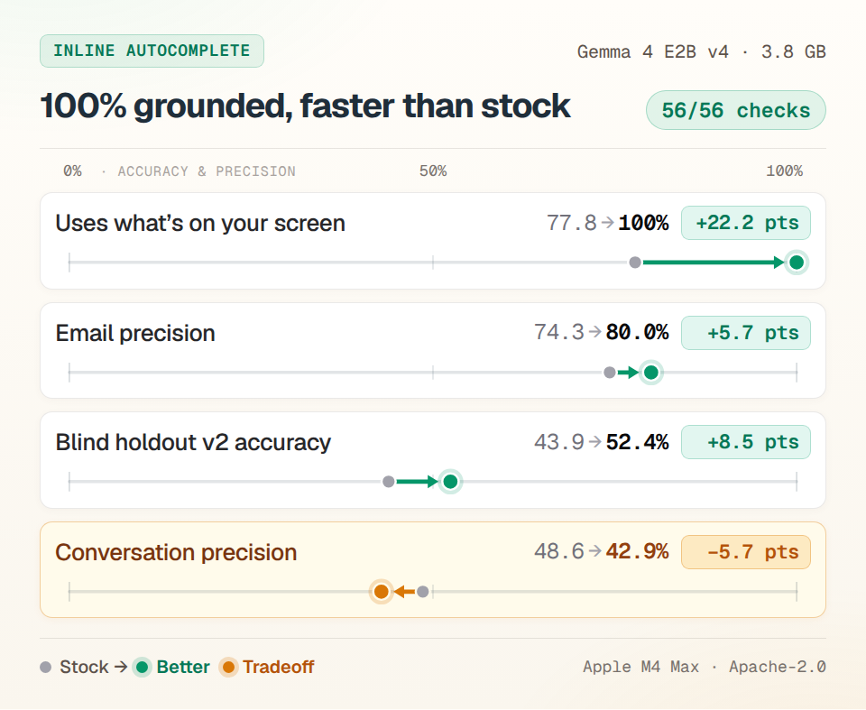
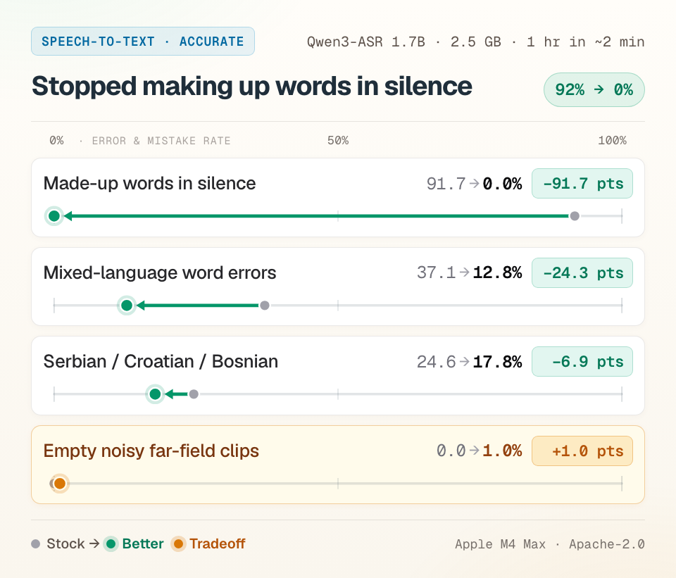

LokalBot is a private work-memory desktop app that runs on llama.cpp. It uses local models for three jobs: writing meeting notes and remembering personal facts (Think), finishing sentences as you type in other apps (Autocomplete), and transcribing meetings and voice dictation (Transcribe).
The stock open-weight models were fine on clean English and got annoying fast once I used them every day in English and Serbian. In one Serbian Cyrillic meeting from my replay suite (staging-sr), stock Qwen3.5 4B turned the summary and all eight action items into Russian and missed the decision completely:
Transcript (Serbian / Montenegrin Cyrillic)Јелена: „Договорили смо се да у четвртак у 14:00 CET пустимо нову верзију на пет одсто саобраћаја, под условом да провјера поновног учитавања прође. Нећемо је пустити за викенд.”
Stock Qwen3.5 4BСогласовано запуск новой версии на 5% трафика в четверг в 14:00 CET при условии проверки повторного загрузки, без запуска в выходные. Decisions came back as None, with 20 Russian-drift hits across the notes.
Qwen3.5-4B-LokalBot-v2Пуштање нове верзије на 5% саобраћаја у четвртак у 14:00 CET, под условом да провјера поновног учитавања прође. Saved as a decision, with zero Russian drift (v4 keeps zero Russian drift and catches 8 decisions across the six replay fixtures).
The other models had their own weak spots. The same notes model recalled 0 of 13 Serbian personal facts and caught decisions in only 6 of 19 real meetings that had them. Autocomplete accuracy fell from 25.3% in English to 7.6% in Serbian Latin. On 24 clips of silence and room noise, the larger speech model invented words or read back names from its vocabulary hint on 22. The smaller speech model got roughly every second word wrong on Serbian, Croatian and Bosnian speech.
So I tried my hand at fine-tuning all four, starting from the models LokalBot already used as defaults: Qwen3.5 4B for notes and memory, Gemma 4 E2B for autocomplete, and Qwen3-ASR 1.7B and 0.6B for speech. It was more fun than I expected. The first round took 18.5 hours and left only the two speech models ready to ship. Follow-up passes on Nov 22 fixed the other two, and PR #561 makes all four LokalBot’s built-in defaults. The Apache-2.0 files are on Hugging Face.
This post is mostly about how it went: the loop I ran, what broke on each pass, and what I’d do again. The numbers are in the scorecards, with the full tables folded under each one.
Ground rules before any training
- Open data only. Every training set uses openly licensed data (Apache-2.0, ODC-By, CC0 and CC-BY-4.0) plus synthetic examples written by open-weight models. No private recordings or meetings went into training.
- Test sets frozen first. Held-out sets were fixed ahead of time and checked for overlap with the training text.
- Measure through the app. Every number went through LokalBot’s real inference paths and validators.
- Check the plumbing before renting a GPU. A lot of fine-tunes go wrong before training starts, because the training script feeds the model slightly different prompt text than the app sends at run time. I checked that the two matched token for token, then merged an empty add-on and confirmed the model’s output did not change.
One caveat: the reference notes for the 28 real test meetings were written by a frontier model, not by a person.
The loop
The four models shared one loop: build examples, train a small add-on, shrink the result, test it through the app, and look at what failed. Here it is in detail for the notes model, where a larger model writes the examples and LokalBot’s own validator decides which ones the small model gets to learn from. I didn’t run the steps by hand: Gemini Neon (xhigh) was the orchestrator and drove everything from my terminal.
Qwen3.6-35B-A3B. About nine times the student’s size, and it thinks before it answers.Qwen3.5 4B, nudged toward the examples by training.- 1The teacher writes notes for synthetic and public meetings. For
v4that came to 2,005 meetings. - 2Every note goes through the Swift evidence rules the app itself uses (compiled into a command-line tool from
v3on). Unsupported action items are thrown out. - 3Surviving meetings join repair traces, memory, tool and digest rows: 4,117 rows with 9,192 verified actions.
- 4The 4B model stays frozen. A small LoRA add-on on 248 projections learns from the rows for 1.5 passes.
- 5The add-on is folded into the model at a chosen strength, then the weights are squeezed to 4 bits.
- 6The Mac replays 28 real meetings through LokalBot’s notes code; the model answers from the GPU. The meetings are for testing only.
owner: user due: Friday
source: s142 context: s141
quote: “I’ll send it by Friday.”
- The quote really appears in the cited line
- The owner has evidence, or is marked unclear
- Context sits within 8 lines of the source
- A status update is not a task
v3 never saw generic speaker labels, so it answered with no actions on 6 of 28 real meetings. v4 added 487 unnamed-speaker meetings and had 0.
v3 shipped at 0.85, v4 at 1.0. The strength is picked on the development meetings.What one pass costs
The GPU side ran on Google Colab, through Google’s Colab CLI. That turns the loop into a shell script an agent can run: start a GPU session, upload the data, run the step, download the result, stop the session. No notebook anywhere.
Colab bills in compute units, and the 96 GB G4 costs 11.2 of them an hour. For the notes model, one pass came to about 40 units:
- The teacher writes the examples: about two hours for the
v4additions, roughly 22 units. - Train, merge at three strengths, shrink: about 70 minutes, roughly 13 units.
- Score the candidates: five scoring runs, about 25 minutes, roughly 5 units.
The last two were timed on a later run of the same recipe. I’m on Google’s AI Ultra plan, which comes with 1,000 Colab units a month, so all of this ran on credits I already had. On the cheaper AI Pro plan ($19.99 a month, 200 units) a unit works out to about 10 cents if you count the whole subscription as GPU money, so a pass is about $4.
The money was not the expensive part. I lost more time to infrastructure than to anything about the models: waiting for a G4 to become available, and clearing space on my Mac after its disk filled up, which happened a few times. A session also bills until it is stopped, so every script ends by stopping it and checking that the usage rate is back at zero.
Four passes on the notes model
It did not work the first time, or the second. Each pass fixed one thing and exposed the next, and almost all of the gains came from fixing the data, not the training settings. It really is garbage in, garbage out.
v1fixed the headline problems and got timid. Decisions, Serbian memory and the drift into Russian were all fixed. But on meetings with several speakers it saved fewer action items than stock (17, down from 27).v2looked good on synthetic tests and stumbled on real meetings. I added action-dense meetings and hard negative memory examples, and the test scores recovered. On 12 real meetings, though, it drew 72 validator rejections against 40 for stock. The training data had bugs. The examples for the “fix your notes” step were written in a different format from the one the app sends, so the model had never seen the real thing. And every synthetic meeting was forced to have five to seven action items.v3put the app’s validator in the loop and went quiet. I compiled LokalBot’s Swift validator into a command-line tool and ran every example through it. Rejections fell by 85%, but the model returned no action items at all on 6 of 28 real meetings. Its examples all had named speakers such asAnaandMarko; real recordings mostly carry labels likethem 2andlocal 1.v4trained on examples that look like real recordings. I doubled the dataset to 4,117 checked rows, including 487 meetings with unnamed speakers. No real meeting came back empty, decisions were caught in 19 of 19 meetings that had them (stock: 6), and validator rejections fell from 185 to 71. Action-item recall came out at 52.7% against 46.7% for stock, but I don’t count that as a gain. When I later scored the samev4file twice on another set of meetings, it hit 40 of 85 reference actions the first time and 36 the second. That swing is 4.7 points on its own, so a six-point gap from one run per model is level with stock as far as I can tell.

See the full Qwen3.5 4B numbers
Suite (Colab G4 · llama-server) |
Stock 4B | LokalBot v3 | LokalBot v4 | v4 vs. Stock |
|---|---|---|---|---|
| Memory Retention (English, 96 cases, 52 gold) | 73/96 (59.6% rec, 3 unw) | 95/96 (100% rec, 1 unw) | 93/96 (96.2% rec, 1 unw) | +20.8 pp (+36.5 pp rec) |
| Memory Retention (Serbian, 24 cases, 13 gold) | 10/24 (0/13 rec, 9 unw) | 23/24 (12/13 rec, 0 unw) | 24/24 (13/13 rec, 0 unw) | +100 pp rec (24/24) |
| SparkX26 Guard (12 JSON / 43 fields · 6 tools) | 8/12 (38/43) · 6/6 · 0.18 s | 9/12 (39/43) · 6/6 · 0.14 s | 9/12 (39/43) · 6/6 · 0.14 s | +1 JSON (+1 field) |
| Golden6 Swift Replay (6 synthetic meetings) | 31 act · 5 dec · 3 rej · 16 RU · 5.4 s | 32 act · 7 dec · 0 rej · 0 RU · 3.8 s | 29 act · 8 dec · 1 rej · 0 RU · 3.7 s | +3 dec, 0 drift |
| 28 Real Meetings (19 dec mtgs, 150 ref act) | 27/28 · 6/19 dec · 46.7% rec · 185 rej · 17.0 s | 28/28 · 19/19 dec · 31.3% rec (6 zero) · 27 rej · 9.5 s | 28/28 · 19/19 dec · 52.7% rec (0 zero) · 71 rej · 11.8 s | +6.0 pp rec, 19/19 dec, −62% rej |
The recall figures come from one run per model; two runs of the same file differed by 4.7 points on another meeting set, so the +6.0 pp is not a reliable gain. On the original 12-meeting subset (70 ref actions), action recall is 54.3% (38/70) for v4 vs. 51.4% (36/70) for stock and 31.4% (22/70) for v3. Full tables and SHA-256 checksums are in stevyhacker/Qwen3.5-4B-LokalBot-GGUF.
Autocomplete: the same loop, a different risk


Autocomplete only shows a suggestion when the model is confident. Ordinary fine-tuning makes a model more confident about everything, which floods the editor with bad guesses. So instead of training only toward the right answer, I trained the small model to match the word probabilities of a larger Gemma and of its own stock version, which kept its confidence honest.
The fixes again came from looking at failures. I had Claude Opus compare 50 unlabeled pairs of completions. It preferred the fine-tune 27 to 9, but kept pointing at bad email completions. Printing a few raw training rows showed why: the email examples had pulled in spam web pages. After that was cleaned up, two small memory checks still failed, which traced to two training-script bugs, one of which silently dropped 818 short examples. The v4 pass fixed both. It passes 56 of 56 memory and on-screen-context checks, lifts email precision from 74.3% to 80.0%, and shows about as many wrong suggestions as stock (182 vs. 181).
See the full Gemma 4 E2B numbers
| Benchmark (LokalBot macOS Release binary) | Stock i1-Q6_K | v4 (default, s=1.0) | Change |
|---|---|---|---|
| Engine Overall (788 checkpoints) acc / prec | 23.10% / 50.1% | 25.25% / 52.2% | +2.15 / +2.09 pp |
| Engine Correct / Wrong shown | 182 / 181 | 199 / 182 | +17 right / +1 wrong |
| Email (52) acc / prec | 50.00% / 74.3% | 53.85% / 80.0% | +3.85 / +5.7 pp |
| Serbian Latin (66) · Cyrillic (58) acc | 7.58% · 8.62% | 12.12% · 13.79% | 1.6× · 1.6× (v3: 3.0× / 2.2×) |
| Multilingual (40) · Heldout Midword (288) | 35.0% · 52.78% | 42.5% · 53.82% (68.9% prec) | +7.5 · +1.04 pp |
| Visible Context Dev (8) / Heldout (18) / Link (4) | 6/8 · 14/18 · 3/4 | 8/8 · 18/18 · 4/4 | 100% (0 stale) |
| Memory Heldout (12) / Dev (6) / Relevance (5) | 12/12 · 6/6 · 5/5 | 12/12 · 6/6 · 5/5 | 56/56 total (0 regressions) |
Blind fresh_holdout_v1 (160) · SR-Latn (30) |
73.12% · 70.0% | 78.75% · 76.7% (2 forb) | +5.63 · +6.7 pp |
Blind fresh_holdout_v2 (82 fresh cases) |
43.90% (87.8% prec, 1 forb) | 52.44% (89.6% prec, 1 forb) | +8.54 pp |
| Latency (M4 Max) boundary med / typing p95 | 21.2 ms / 103.5 ms | 20.2 ms / 80.0 ms | −1.0 ms med / −23.5 ms p95 |
Full stock / v2-PLE / v3 / v4 progression is in stevyhacker/Gemma-4-E2B-LokalBot-GGUF.
Speech: teaching silence
The speech models had a different habit. Given silence or room hum plus a list of names to listen for, they read the names back. The fix was in the examples: about 3% of the training clips were silence or noise paired with an empty transcript, and 18% were real speech turned down very quiet with its full transcript, so the model would not learn to mute quiet speakers. The mix came to 47,314 openly licensed clips.


On the larger model, invented words on silence went from 91.7% of clips to none, and word errors on mixed-language speech fell from 37.1% to 12.8%. An earlier version drew one complaint, about meeting audio recorded from across the room. A test set eight times larger showed that version was already level with stock, and the next pass improved on it.
The same recipe on the small 0.6B model trained in 14.4 minutes and gave the largest gains of the day. At about a gigabyte, it now matches the stock 1.7B model on unseen Croatian.

See the full Qwen3-ASR 1.7B and 0.6B numbers
| 1.7B pillar (466-clip holdout & 400-clip AMI) | Stock 1.7B Q8_0 | v3 (scale 1.15, top-4 enc) | Change |
|---|---|---|---|
Expanded AMI-400 ihm (200) / sdm (200) |
10.24% / 26.08% (0 empty) | 9.79% / 24.41% (2/200 empty) | −0.45 / −1.67 pp (in-domain) |
| Dictation silence / noise (24 clips) | 8.3% clean (16 echo, 123 w) | 100.0% clean (0 echo, 0 w) | +91.7 pp |
Code-switching sr+en, en+de (17) |
37.12% | 12.81% | −24.31 pp |
South Slavic sr/hr/bs (120) auto / pinned hr |
24.64% / 24.60% | 17.79% / 17.59% (0.06% non-Lat) | −6.85 / −7.01 pp |
OOD Croatian VoxPopuli hr (25) auto / pinned |
24.95% / 22.59% | 19.06% / 18.66% | −5.89 / −3.93 pp |
| Vocab recall / bias WER (15) · distractor (15) | 86.7% / 9.00% · 13.83% | 100.0% / 4.00% · 11.35% | +13.3 / −5.00 · −2.48 pp |
Guard en/de/fr/es/ru (200) · holdout RTFx |
4.35% · 28.5× | 4.53% · 31.2× (31.7× AMI) | +0.18 pp · +9.5% |
| 0.6B pillar (466-clip holdout & 400-clip AMI) | Stock 0.6B Q8_0 | LokalBot 0.6B v1 | Change |
|---|---|---|---|
South Slavic (120) auto / pinned hr |
52.26% (33.6% non-Lat) / 48.32% | 30.57% (0.02% non-Lat) / 29.95% | −21.69 / −18.37 pp |
OOD Croatian VoxPopuli hr (25) auto / pinned |
46.95% / 37.92% | 24.56% / 22.40% | −22.39 / −15.52 pp |
Code-switching sr+en, en+de (17) |
49.21% (22.1% non-Lat) | 20.72% (0.0% non-Lat) | −28.49 pp |
| Vocab recall / bias WER (15) · distractor (15) | 80.0% / 16.33% · 30.50% | 100.0% / 10.67% · 23.05% | +20.0 / −5.66 · −7.45 pp |
Expanded AMI-400 ihm (200) / sdm (200) |
10.87% / 26.57% (0 empty) | 10.72% / 26.23% (1/200 empty) | −0.15 / −0.34 pp |
Guard en/de/fr/es/ru (200) · silence (24) |
6.64% · 100.0% clean | 6.77% · 100.0% clean | +0.13 pp · same |
| Throughput (RTFx) AMI-400 / holdout | 51.87× / 39.67× | 51.30× / 52.72× | Same on AMI-400 |
Repos and SHA-256 checksums: Qwen3-ASR-1.7B-LokalBot-GGUF and Qwen3-ASR-0.6B-LokalBot-GGUF.
What got worse
None of the four is a pure upgrade. Here is what each one gave up, as listed in its model card:
- Notes (
Qwen3.5 4B v4). It saves more action items thanv3did, so its precision is back at stock’s level (37.0%), and it gives up one point of memory retention (117 of 120, against 118 forv3). - Autocomplete (
Gemma 4 E2B v4). Precision drops in conversations (48.6% to 42.9%) and in formatting (61.5% to 57.1%). It also completes fewer short Serbian prompts thanv3, which stays available for people who prefer more suggestions. - Speech (
Qwen3-ASR 1.7B v3). It returns an empty transcript on 2 of 200 very noisy far-field clips where stock returns none, and word errors across five other languages tick up by 0.18 points. - Speech (
Qwen3-ASR 0.6B v1). It is slightly worse on a small 25-clip meeting test and about level with stock on the 400-clip one.
What I’d do again
I don’t know how much of this carries over to other apps, but on this run these things helped:
- Put the app’s real validator in the loop. Filtering every example through LokalBot’s own rules cut validator rejections on real meetings from 185 to 71.
- Make the examples look like real input. The biggest regressions came from tidy synthetic data: named speakers, a fixed number of action items, a repair format the app never sends.
- Print the raw rows when a number looks off. That is how I found the spam in the email examples, the 818 silently dropped rows, and the missing unnamed-speaker meetings.
- Let a bigger model teach a small one. A 35B model that thinks before answering wrote the notes examples, and a 26B Gemma guided autocomplete. The small models kept most of the quality gain with no extra delay at run time.
- Try a few merge strengths before touching the held-out test. Each merge takes about a minute and usually finds another point or two.
- Check the boring GPU plumbing early. Data-transfer charges, containers with too little memory, an outdated driver that silently fell back to CPU, and my laptop disk filling up all cost more time than choosing a learning rate.
- Score the same file twice before trusting a small gap. I learned this one late. Two identical runs differed by four reference hits out of 85, so a gap that size between two models tells me nothing.
Try the models
In LokalBot, PR #561 makes all four fine-tunes the new built-in defaults (with an in-app upgrade prompt if you are still on the previous stock files), or you can grab any checkpoint under Settings → Models → Browse Hugging Face by searching stevyhacker/. You can also run any of the GGUFs directly with llama.cpp:
# Think (Qwen3.5-4B-LokalBot-v4, non-thinking mode)
llama-server \
-m Qwen3.5-4B-LokalBot-v4-Q4_K_M.gguf \
-c 32768 -ngl 99 --jinja --reasoning on --port 8080
# Autocomplete (Gemma-4-E2B-LokalBot-v4)
llama-server \
-m Gemma-4-E2B-LokalBot-v4-i1-Q6_K.gguf \
-c 4096 -ngl 99 --port 8081
# Transcribe 1.7B (Qwen3-ASR-1.7B-LokalBot-v3 + paired v3 mmproj)
LLAMA_MEDIA_MARKER="<__media__>" llama-server \
-m Qwen3-ASR-1.7B-LokalBot-v3-Q8_0.gguf \
--mmproj mmproj-Qwen3-ASR-1.7B-LokalBot-v3-Q8_0.gguf \
-c 4096 -ngl 99 --port 8082